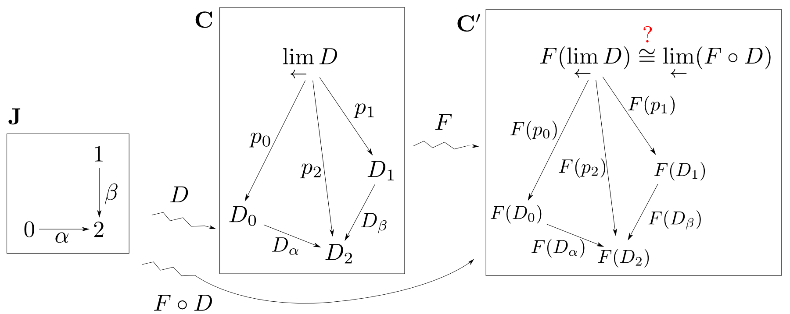
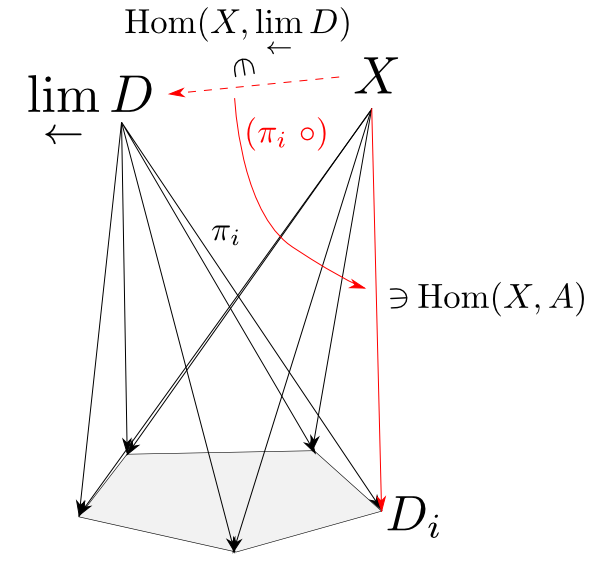
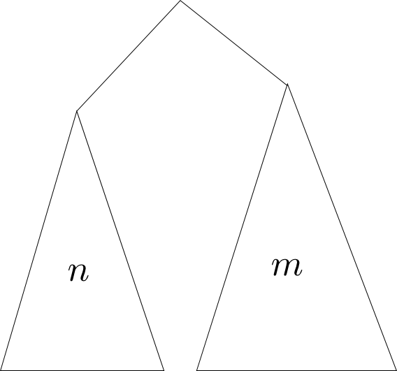

圏論勉強会
第8回
@ワークスアプリケーションズ
中村晃一2013年7月4日
謝辞
この勉強会の企画，会場設備の提供をして頂きました
㈱ ワークスアプリケーションズ様
にこの場をお借りして御礼申し上げます。
この会について
- 圏論(category theory)を題材にいろんなことを学びます。
- 分かり易さを重視して初歩的な例を多用します。
- 関数型言語の経験がある方がより楽しめると思います。資料中では主にHaskellを使います。
- 中高生も数人見ているらしいのでプログラミングと関係が浅い内容も取り上げます。
- この資料はhttp://nineties.github.com/category-seminarに置いてあります。
第8回
$\omega$余極限,連続性
プログラム運算
第8回の内容
前半は極限と函手の連続性について,後半は代数的データ型・プログラム運算の続きをやります。
$\omega$余極限
$\omega$極限・余極限
順序集合$(\mathbb{N}, \leqq)$を圏と見なしたものを$\omega$と表し, $\omega$から他の圏への函手を$\omega$-chainなどと言います。
そして$\omega$-chainの極限・余極限を$\omega$極限($\omega$-limit), $\omega$余極限($\omega$-colimit)と言います。 $\omega^{\mathrm{op}}$極限,余極限も同様に定義されます。
これらは前回までにやった極限・余極限の一種である事に注意して下さい。
$\omega$余極限
$\omega$-chainというのは対象と射の列 $$ A_0\rightarrow A_1\rightarrow A_2\rightarrow \cdots$$ の事です。
よく使われるのは下図で表した$\omega$余極限ではないかと思いますので,ピックアップして具体例を紹介します。
$\omega$-余極限の具体例
$\mathbf{C}$を順序集合$(\mathbb{R},\leqq)$とすると函手$a: \omega\rightarrow\mathbf{C}$は単調増加列 $$ a_0 \leqq a_1 \leqq a_2 \leqq \cdots $$ を定めます。 すると「底$a$からの錐」は $$ \text{全ての$i\in\mathbb{N}$について}\ a_i \leqq x $$ を満たす実数$x$により定まります。(対象間に射は一本しかないので可換性は考えなくて良いです。)
$\omega$-余極限の具体例(続き)
そのような$x$のうち,最小の実数が存在するならばそれが$a$の$\omega$余極限$\displaystyle\lim_{\rightarrow}a_i$となります。
定義通りに述べれば,先ほどの条件を満たす任意の$x$に対して$\displaystyle\lim_{\rightarrow}a_i \leqq x$を満たすという事です。 対象間に射は一本しかないので,$\displaystyle\lim_{\rightarrow}a_i$からの射の唯一性は考えなくて良いです。
$\omega$-余極限の具体例の具体例
函手$a: \omega\rightarrow(\mathbb{R},\leqq)$を $$ a_i: 0, \frac{1}{2}, \frac{2}{3}, \frac{3}{4}, \cdots, \frac{i}{i+1},\cdots $$ によって定めると「底$a$からの錐」は $$ \text{全ての$i\in\mathbb{N}$について} \frac{i}{i+1}\leqq x$$ を満たす実数$x$,つまり「$1$以上の実数」となります。
従って $$ \lim_{\stackrel{\longrightarrow}{i \in\omega}} a_i = 1 $$ となります。
$\omega$完備・余完備
圏$\mathbf{C}$において,任意の$\omega$極限が存在するならば$\mathbf{C}$は$\omega$完備($\omega$-complete)であると言い, 任意の$\omega$余極限が存在するならば$\omega$余完備($\omega$-cocomplete)であると言う。
$\omega$余完備な圏の具体例
半順序集合$(\mathcal{P}(\mathbb{N}),\subseteq)$は,任意の$\omega$-chain $$ A_0\subseteq A_1\subseteq A_2\subseteq A_3\subseteq\cdots $$ に対して $$ \lim_{\stackrel{\longrightarrow}{i\in\omega}} A_i = \bigcup_{i\in\mathbb{N}}A_i = A_0\cup A_1\cup A_2\cup A_3\cup \cdots$$ という余極限が存在するので$\omega$余完備となります。
【説明】
任意の$i\in\mathbb{N}$について$A_i \subseteq \bigcup_{i\in\mathbb{N}}A_i$であり,
$X\subseteq\mathbb{N}$が「任意の$i\in\mathbb{N}$について$A_i\subseteq X$」を満たすならば$\bigcup_{i\in\mathbb{N}}A_i\subseteq X$が成立するという事から余極限となっています。
$\omega$CPO
$\omega$余完備な半順序集合の事を$\omega$完備半順序集合($\omega$-complete partial order)略して$\omega$CPOなどと呼びます。
$\omega$CPOなど半順序集合に基づく構造はプログラムの意味論に於いて中心的な役割を果たします。
函手の連続性
極限の保存
$D$を底とする極限錐を函手$F$で他の圏に移しても,やはり$F\circ D$を底とする極限錐になるならば $F$はその極限を保存すると言います。
極限の保存
$F$が$D$の極限・余極限を保存する事を単純に $$ F(\lim_{\leftarrow}D)\cong \lim_{\leftarrow}(F\circ D),\quad F(\lim_{\rightarrow}D)\cong \lim_{\rightarrow}(F\circ D)$$ や $$ F(\lim_{\leftarrow}D_i)\cong \lim_{\leftarrow}F(D_i),\quad F(\lim_{\rightarrow}D_i)\cong \lim_{\rightarrow}F(D_i)$$ などと書き表します。
これらの式は錐の頂点だけでなく錐全体が保たれる事も表しているので、注意して下さい。
函手の連続性
函手$F$が任意のインデックス圏$\mathbf{J}$と極限(余極限)を持つ函手$D:\mathbf{J}\rightarrow \mathbf{C}$について $$ F(\lim_{\leftarrow}D_i) \cong \lim_{\leftarrow}F(D_i) $$ を満たす時,$F$は連続(continuous)であると言い, $$ F(\lim_{\rightarrow}D_i) \cong \lim_{\rightarrow}F(D_i) $$ を満たす時,$F$は余連続(cocontinuous)であると言う。
上の定義において$\mathbf{J} = \omega$と固定した時の連続性を$\omega$連続($\omega$-continuous)及び$\omega$余連続($\omega$-cocontinuous)と言います。
$\mathrm{Hom}$函手の連続性
共変$\mathrm{Hom}$函手 $$ \mathrm{Hom}_{\mathbf{C}}(X, -): \mathbf{C}\rightarrow \mathbf{Sets}$$ は $$ \begin{aligned} & A \longmapsto \mathrm{Hom}_{\mathbf{C}}(X, A) \\ & f \longmapsto (f\ \circ) \end{aligned}$$ の様に対象を$\mathrm{Hom}$集合へ,射$f$を$f$を左から合成する関数へ移すという函手でした。
反変$\mathrm{Hom}$函手 $$ \mathrm{Hom}_{\mathbf{C}}(-, X): \mathbf{C}^{\mathrm{op}}\rightarrow \mathbf{Sets}$$ はこの双対でした。
定理
共変$\mathrm{Hom}$函手は連続である。すなわち$\mathbf{C}$の極限を$\mathbf{Sets}$の極限に移す。 $$ \mathrm{Hom}_{\mathbf{C}}(X, \lim_{\leftarrow}D_i) \cong \lim_{\leftarrow}\mathrm{Hom}_{\mathbf{C}}(X, D_i) $$ また,反変$\mathrm{hom}$函手は$\mathbf{C}^{\mathrm{op}}$から$\mathbf{Sets}$への連続な函手である。すなわち,$\mathbf{C}$の余極限を$\mathbf{Sets}$の極限に移す。 $$ \mathrm{Hom}_{\mathbf{C}}(\lim_{\rightarrow}D_i, X) \cong \lim_{\leftarrow}\mathrm{Hom}_{\mathbf{C}}(D_i,X) $$
具体例
証明の前に今の定理から得られる公式を列挙してみると $$ \begin{aligned} & \mathrm{Hom}_{\mathbf{C}}(X, 1) \cong 1\\ & \mathrm{Hom}_{\mathbf{C}}(0,X)\cong 1 \\ & \mathrm{Hom}_{\mathbf{C}}(X, A\times B)\cong \mathrm{Hom}_{\mathbf{C}}(X,A)\times\mathrm{Hom}_{\mathbf{C}}(X,B)\\ & \mathrm{Hom}_{\mathbf{C}}(A+B,X)\cong \mathrm{Hom}_{\mathbf{C}}(A,X)\times\mathrm{Hom}_{\mathbf{C}}(B,X) \\ \end{aligned} $$ などが成り立ちます。イコライザ・コイコライザ・引き戻し・押し出しなどでも同様です。
連続性の証明
極限錐が$\mathrm{Hom}_{\mathbf{C}}(X, -)$でどう移るかイメージを持っておきましょう。
点線矢印の集合が錐の頂点,赤線矢印の集合が底の対象,$(\pi_i\ \circ)$が錐の母線になります。
函手は図式の可換性を保つので錐の側面の可換性は自動的に保たれます。
【証明】
$\displaystyle (\lim_{\leftarrow}D,\pi_i)$を$\mathbf{C}$での極限錐とする。
集合$A$を頂点とする底$\mathrm{Hom}_{\mathbf{C}}(X,D(-))$への錐を$(A,a_i)$とする。
ここで関数$u$が$a_i=(\pi_i\ \circ)\circ u$を満たすと仮定すると,$x\in A$を両辺に代入する事によって
右下の可換図式が得られる。この時$(X, a_i(x))$は底$D$への錐になっているので$u(x)$は一意に定まる。
従って任意の$x\in A$に対して$u(x)$が一意に定まるので$u$が一意に定まる。すなわち
錐$\displaystyle(\mathrm{Hom}_{\mathbf{C}}(X,\lim_{\leftarrow}D), (\pi_i\ \circ))$が底$\mathrm{Hom}_{\mathbf{C}}(X,D(-))$への極限錐となっている事が示された。
また,反変$\mathrm{Hom}$函手の連続性は双対性による。
□
一旦ここまで
何らかの完備性を持った圏や,連続な函手はやはり重要な役割を持つことが多いですので、圏論の基礎的な知識として知っておきましょう。
プログラム運算
前回の続きをやっていきます。まずはcatamorphismに関するいくつかの定理を確認します。
例題・練習問題の出典は以下の書籍です。
- Richard Bird, Oege De Moor: "Algebra of Programming"
$$ \langle \banana{f}, \banana{g}\rangle = \banana{\langle f\circ F(\pi_1), g\circ F(\pi_2)\rangle} $$
複数のcatamorphismを1つのcatamorphismに変換する事が出来ます。証明は,左下の二図式が可換である時に右下の図式が可換であることを示せば良いです(練習問題)。

練習問題
数値リストの平均値を求める関数$\mathrm{average}$は $$ \mathrm{average}(ls) = \mathrm{sum}(ls)/\mathrm{length}(ls) $$ と書けますが,1回の走査で求められるように関数を書き直して下さい。
二分木などの他のデータ構造でも同様の問題を考えて見て下さい。
$f\circ \mathrm{in} = h\circ F\langle f,g\rangle,\ g\circ \mathrm{in} = k\circ F\langle f,g \rangle$ならば $$ \langle f,g \rangle = \banana{ \langle h,k\rangle } $$
バナナスプリット則を更に一般化した定理になっています。
証明は,左下の二図式が可換であるならば右下の図式が可換である事を示せば良いです。具体的に書いてみると $$\langle f,g\rangle\circ \mathrm{in} = \langle f\circ \mathrm{in},g\circ\mathrm{in}\rangle = \langle h\circ F\langle f,g\rangle, k\circ F\langle f,g\rangle\rangle = \langle h,k\rangle \circ F\langle f,g\rangle $$
例題
Fokkingaの相互再帰定理を用いて,以下の関数をより効率的な関数に書き直しましょう。
$F(X) = 1 + \mathrm{Int}\times X$として,$\mathrm{steep}$の定義を図式にすると下の様になります。
但し $$ c = \mathrm{true},\quad f(a, (b, s)) = a > s \ \mathrm{and}\ b $$ です。
続いて$\mathrm{sum}$の図式は下の様になります。
但し $$ d = 0,\quad g(a, s) = a + s$$ です。
相互再帰定理に当てはめる為に$\mathrm{sum}$の方をちょっと変形します。
但し $$ d = 0,\quad g'(a, (b, s)) = a + s$$ です。
以上で相互再帰定理の前提が満たされましたので $$ \langle \mathrm{steep},\mathrm{sum}\rangle = \banana{\langle [c,f],[d,g'] \rangle}$$ つまり $$ \color{red}{\mathrm{steep} = \pi_1\circ\banana{\langle [c,f],[d,g']\rangle}}$$ である事が導かれました。
練習問題
- $\mathrm{steep}$の例を適当な言語で実装してみて下さい
-
二分木が平衡状態であるという事を,各節点で
$$ 3(m+1) \geqq n+1\ \text{かつ}\ 3(n+1)\geqq m+1$$
が成り立つ事とします。($n,m$は左右の部分木の節点数)
二分木が平衡状態か否かを判定する関数を相互再帰定理に基いて導出して下さい。 [追記]この条件式は以下の論文の共著者である山本さんの提案を受けて,講義当日に提示した$1/3 \leqq n/(n+m+1)\leqq 2/3$から変更しました。
定理: セクションはcatamorphism
$(T,\mathrm{in})$が始代数であるならば,任意のセクション$ s: T\rightarrow A $ は適当な$f: F(A)\rightarrow A$によって $$ s = \banana{f} $$ と表せる。
【証明】
$s$はセクションなのでレトラクション$r: A\rightarrow T$が存在して$r\circ s = 1_T$を満たす。すると下図が可換となるので
$$ \color{red}{s = \banana{s\circ\mathrm{in}\circ F(r)}} $$
である。 □
定理
$(T,\mathrm{in})$が始代数であるならば,任意の$ f: T\rightarrow A $ は適当な$g: F(A)\rightarrow A$によって $$ f = \pi_1\circ \banana{g} $$ と表せる。
【証明】
$\langle f, 1_T\rangle: T\rightarrow A\times T$は$\pi_2\circ \langle f,1_T\rangle = 1_T$を満たすのでセクションである。
従って
$$ \langle f,1_T \rangle = \banana{\langle f,1_T\rangle\circ\mathrm{in}\circ F(\pi_2)} $$
であるから
$$ \color{red}{f = \pi_1\circ \banana{\langle f,1_T\rangle\circ\mathrm{in}\circ F(\pi_2)}} $$
である。 □
練習問題
階乗関数 $$ \mathrm{fact}(n) = n! $$ を自然数型についてのcatamorphismを用いて $$ \mathrm{fact} = \pi_1\circ \banana{f} $$ の形に書いて下さい。
先ほどの定理で得られた式を書き直すと $$ \begin{aligned} f & = \pi_1\circ \banana{\langle f,1_T\rangle\circ\mathrm{in}\circ F(\pi_2)} \\ & = \pi_1\circ \banana{\langle f\circ\mathrm{in}\circ F(\pi_2),\mathrm{in}\circ F(\pi_2)\rangle} \end{aligned}$$ となります。$g = f\circ\mathrm{in}\circ F(\pi_2)$と置いて綺麗にすると $$ f = \pi_1\circ\banana{\langle g, \mathrm{in}\circ F(\pi_2)\rangle} $$ となります。
paramorphism
$(T,\mathrm{in})$が始代数の時 $$ \pi_1\circ\banana{\langle \varphi, \mathrm{in}\circ F(\pi_2)\rangle} $$ と表される射をparamorphismと言い $$\para{\varphi} = \pi_1\circ\banana{\langle \varphi, \mathrm{in}\circ F(\pi_2)\rangle} $$ と表す。
paramorphism=原始再帰法
$\mathrm{in}\circ F(\pi_2)$の部分は一度分解した入力を組み立て直すという事を表しています。 例えば整数型についてのparamorphismは
という形式になります。paramorphismは入力を再帰呼び出しで消費する他に,それ自体も引数として使える形の再帰スキームと言う事が出来ます。 また,この形式の再帰を原始再帰法とも呼びます。
余代数
$F$代数の双対概念を$F$余代数と言います。
$F$余代数
函手$F:\mathbf{C}\rightarrow\mathbf{C}$に対して射$x: X\rightarrow F(X)$を$F$余代数($F$-coalgebra)という。 この$F$余代数を$(X,x)$とも表す。
$F$余代数は,下の図式を可換とする射$h:X\rightarrow Y$を$(X,x)$から$(Y,y)$への射として圏をなす。
$F$終余代数, anamorphism
$F$余代数の圏に終対象が存在するならばそれを$F$終余代数(final $F$-coalgebra)という。
任意の$F$余代数$(X,\psi)$から$F$終余代数$(T,\mathrm{out})$への射は$\psi$に対して唯一つに定まるのでこれを$\lens{\psi}$と表し, anamorphismと呼ぶ。
余代数とはどのような代数か？
例として函手$F(X) = 1 + X$を考えます。この時の$F$余代数は $$ f: X \rightarrow 1 + X $$ という射になります。
関数として説明すると,この$f$は$1$の値か$X$の値のどちらかを返す関数となります。
余帰納的自然数
$F(X) = 1 + X$で定まる終余代数を余帰納的自然数と呼ぶ事にします。
$\mathbf{Sets}$における余帰納的自然数は自然数に無限大を追加した $$ \mathbb{N}\cup\{\infty\} $$ となります。またこの時の$\mathrm{out}$は$1$の要素を$\mathrm{nil}$と書くことにすると $$ \begin{aligned} & \mathrm{out}(0) = \mathrm{nil} \\ & \mathrm{out}(n+1) = n \\ & \mathrm{out}(\infty) = \infty \end{aligned} $$ となります。
【証明】
$1$の要素を$\mathrm{nil}$と書く事にする。
任意の$F$余代数$f: X\rightarrow 1 + X$が
$$ \mathrm{out}\circ u = (1_1+u)\circ f$$
を満たすとすると,これをpointwiseに書き直して
$$ u(x) = \left\{\begin{array}{cc}
0 & (f(x) = \mathrm{nil}\text{のとき}) \\
1 + u(f(x)) & (f(x) \neq \mathrm{nil}\text{のとき}) \\
\end{array}\right .
$$
となる。従って$f^n(x) = \mathrm{nil}$となる自然数$n$が存在する場合には
$$ u(x) = n $$
存在しない場合には
$$ u(x) = \infty $$
と$u$が一意に定まる。□
anamorphism=展開
anamorphismは$\mathrm{unfoldr}$に代表される,catamorphismとは逆に値からデータ構造を展開する形の再帰関数関数を表していると言えます。
また,無限リストなどの無限データ型を表している点も重要です。
練習問題
リストなどのanamorphismを導出して下さい。それが既存の$\mathrm{unfoldr}$などの関数と一致する事を確かめて下さい。
帰納的データ型と余帰納的データ型
自然数の例で見たように一般に始代数と終余代数は一致しません。始代数として定まるデータ型を帰納的データ型(inductive data type),終余代数として定まるデータ型を余帰納的データ型(coinductive data type)などと呼びます。
Haskellなどでは帰納的データ型と余帰納的データ型は(ほぼ)一致するのでこれらは区別されていません。詳しくは後の回に扱います。一方Coqなどでは区別されています。
hylomorphism
始代数と終余代数が一致する圏では,以下のmorphismを考える事が出来ます。これは後にさらに一般化されます。
$$ \banana{\varphi}\circ\lens{\psi} $$ と表される射をhylomorphismと言い, $$ \hylo{\varphi,\psi} = \banana{\varphi}\circ\lens{\psi} $$ と表す。
hylomorphism
$ \banana{\varphi}\circ\lens{\psi} $は中間データを一旦生成してからそれを畳み込むというパターンの計算です。

中間データを生成しないようにhylomorphismを実装しておけば,このタイプの計算を効率化する事が出来ます。
練習問題
- 自然数型,リスト型,二分木などのhylomorphismを導出して下さい。
- 一旦リスト$[n,n-1,n-2,\cdots,1]$を生成して,要素の積を掛ける事で$\mathrm{fact}(n)$を計算出来ます。 この方法で$\mathrm{fact}$をcatamorphismとanamorphismの合成,hylomorphismの2通りの方法で実装してみて下さい。
第8回はここで終わります
お疲れ様でした。
来週の前半は$CPO$と不動点,始代数・終余代数との関係について説明します。
来週の後半はもう少しだけプログラム運算をやります。